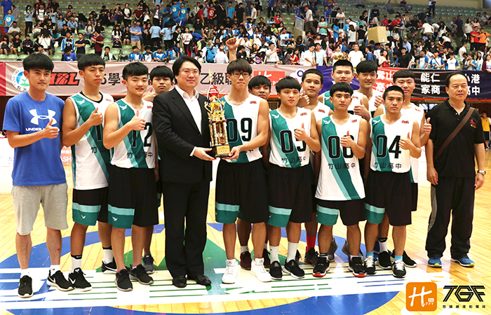

貼文時間：2017/06/09

105年學度全國高中乙組籃球第七名由來自南投的竹山高中拿下。今年僅一位高三莊惟雄畢業，陣中球員跟上個學年度並沒有產生大幅度地變化，但身材上的劣勢會是明年最大的隱憂，新任隊長林韋呈表示：「雖然我們平均身高輸人，但鬥志絕對沒有輸，明年的我們將繼續挑戰八強。」如何再度用準度速度來彌補這個缺口，將是下學年度他們必面對的重大課題。
59，69，79，89 一個泰雅、三個布農族原住民的專屬連線。連線，除了證明他們的好感情外，另一方面更有傳承的意味。集中身高僅一百六十六公分的89號范凱心，外界總用他是田浩表弟的身分來看待他，他坦言，有著一群很厲害的哥哥們，自己很驕傲，但自己不想與他們畫上等號，想走出屬於自己的風格。
球風強硬的他，能切又能投，傳球視野、製造助攻方式令人瞠目結舌，看他打球如同欣賞一場秀，猜不透他的下一步。無懼身材矮小，誓言用腦擊敗對手。這就是竹山豪傑的拚勁。
相較起這次八強隊伍，竹山明顯了矮人一截。但重心低又穩，外線破壞力也十足的他們，總會創造一些出奇不意的進攻路線。下學年度，禁區厚度與高度仍是竹山高中的一大劣勢，教練坦言，目前禁區還沒有人可以獨當一面，尤其劉彥廷身體厚度過於單薄，但手感很棒，希望他可以多加強中距離面框出手，增加投籃穩定性，牽制對手，我們才能有裡有外，相信將來只要多練習，會成為球隊的靈魂人物。
沒有身材優勢的他們，只能靠著拚勁再造奇蹟。對於接下來的訓練，教練可要花不少時間來加強他們的體力與防守，以及培養禁區門神的對抗性。種種考驗，相信對他們來說都是成長的養分，更考驗著教練團的功力，若調整得宜，明年的竹山高中仍是全國八強的大熱門。